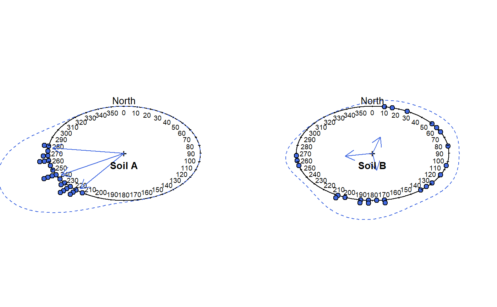

aspect.plot.RdPlot a graphical summary of multiple aspect measurements on a circular diagram.
aspect.plot(p, q=c(0.05, 0.5, 0.95), p.bins = 60, p.bw = 30, stack=TRUE, p.axis = seq(0, 350, by = 10), plot.title = NULL, line.col='RoyalBlue', line.lwd=1, line.lty=2, arrow.col=line.col, arrow.lwd=1, arrow.lty=1, arrow.length=0.15, ...)
| p | a vector of aspect angles in degrees, measured clock-wise from North |
|---|---|
| q | a vector of desired quantiles |
| p.bins | number of bins to use for circular histogram |
| p.bw | bandwidth used for circular density estimation |
| stack | TRUE/FALSE, should the individual points be stacked into |
| p.axis | a sequence of integers (degrees) describing the circular axis |
| plot.title | an informative title |
| line.col | density line color |
| line.lwd | density line width |
| line.lty | density line line style |
| arrow.col | arrow color |
| arrow.lwd | arrow line width |
| arrow.lty | arrow line style |
| arrow.length | arrow head length |
| … | further arguments passed to |
Spread and central tendency are depicted with a combination of circular histogram and kernel density estimate. The circular mean, and relative confidence in that mean are depicted with an arrow: longer arrow lengths correspond to greater confidence in the mean.
Manual adjustment of p.bw may be required in order to get an optimal circular density plot. This function requires the package circular, version 0.4-7 or later.
# simulate some data p.narrow <- runif(n=25, min=215, max=280) p.wide <- runif(n=25, min=0, max=270) # set figure margins to 0, 2-column plot par(mar=c(0,0,0,0), mfcol=c(1,2)) # plot aspect.plot(p.narrow, p.bw=10, plot.title='Soil A', pch=21, col='black', bg='RoyalBlue') aspect.plot(p.wide, p.bw=10, plot.title='Soil B', pch=21, col='black', bg='RoyalBlue')